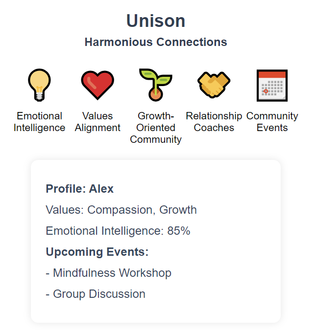

Let two hearts beat in Unison.
Our Features
Unison is a unique dating app that focuses on fostering harmonious connections between individuals based on compatibility in various aspects of life. The application goes beyond traditional matching algorithms and incorporates elements of emotional intelligence, shared values, and personal growth. It aims to create a supportive and uplifting community where users can find meaningful relationships that resonate with their true selves.
Emotional Intelligence Assessment
Users can take an emotional intelligence assessment to better understand their own emotions, communication style, and relationship preferences. This data is used to match users with compatible partners who complement their emotional needs.
Values Alignment
The app emphasizes the importance of shared values and beliefs in forming strong connections. Users can highlight their core values, interests, and life goals to find like-minded individuals who align with their worldview.
Growth-Oriented Community
Unison promotes personal growth and self-improvement within its community. Users can participate in mindfulness exercises, relationship workshops, and personal development challenges to enhance their emotional well-being and relationship skills.
Relationship Coaches
Offer access to relationship coaches or counselors who provide guidance, support, and advice on navigating dating challenges, communication issues, and personal growth opportunities.
Community Events
Organize virtual and in-person events such as discussions, workshops, and gatherings to facilitate connections and foster a sense of belonging within the Unison community. This concept sets the foundation for a dating app that prioritizes personal growth to create harmonious relationships.
"The app was so easy to use, and it really helped me find someone who just gets me. I never thought online dating could be this simple and effective. Thanks to this app, I met someone special, and we've been together happily for over a year now. If you're looking for a real connection, I highly recommend giving this app a try."
Jordan, New York